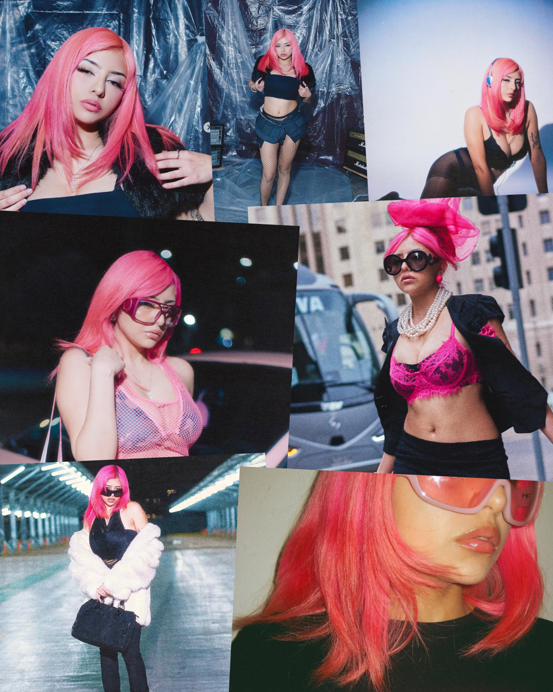
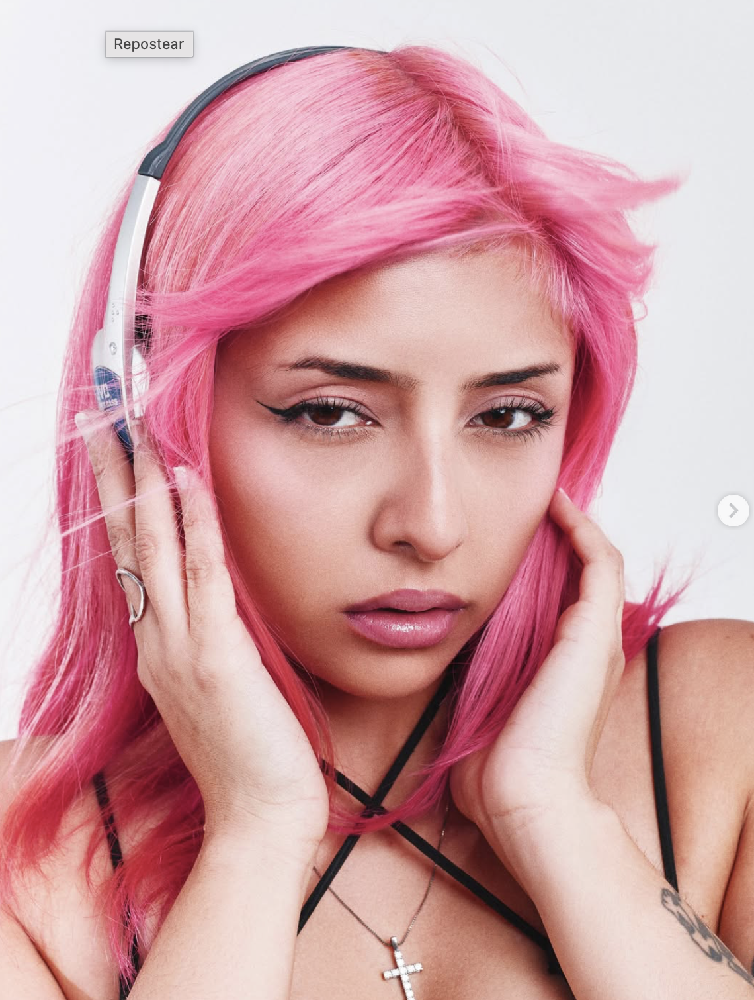
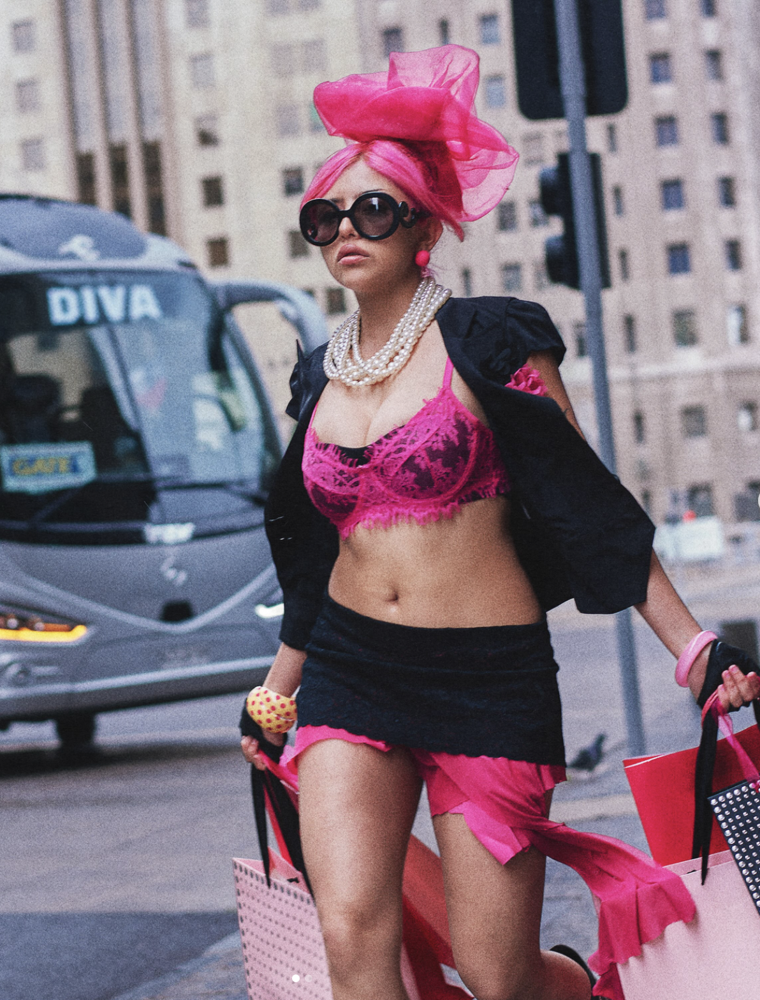
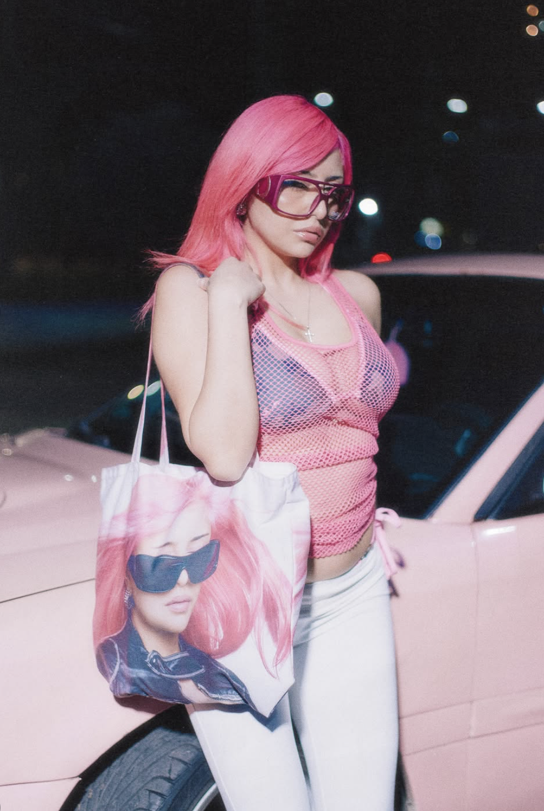

<!doctype html>
<html lang="es">
<head>
<meta charset="utf-8">
<title>Blink Radar VLNTNA B</title>
<style>
  :root{
    --negro:  #0A0A0A;
    --morado: #7B2CFF;
    --blanco: #FFFFFF;
  }
  *{ margin:0; padding:0; box-sizing:border-box; }
  html,body{ background:var(--negro); }

  .lamina{
    position:relative;
    width:1080px; height:1350px;
    background:var(--negro);
    overflow:hidden;
    font-family:"Montserrat", sans-serif;
  }

  /* ---------------------------------------------------------------- FONDO
     El mismo collage en las nueve láminas, teñido de morado: la foto en gris
     pone la luminancia y el morado el color. El tinte va al 68% para que la
     foto no se coma al radar ni se vuelva una mancha plana. */
  .fondo{ position:absolute; inset:0; z-index:0; }
  .fondo img{
    position:absolute; inset:0; width:1080px; height:1350px;
    filter:grayscale(1) contrast(1.24) brightness(.66);
  }
  .fondo .tinte{
    position:absolute; inset:0; background:var(--morado);
    mix-blend-mode:color; opacity:.68;
  }
  .fondo .velo{
    position:absolute; inset:0;
    background:linear-gradient(180deg,
      rgba(10,10,10,.90) 0%,  rgba(10,10,10,.46) 14%,
      rgba(10,10,10,.34) 28%, rgba(10,10,10,.62) 44%,
      rgba(10,10,10,.74) 62%, rgba(10,10,10,.80) 100%);
  }
  /* Las fotos de ella son mucho más claras que las del Radar de TANE, así que
     el rótulo morado de la portada quedaba ilegible sobre la piel. Se arregla
     oscureciendo el fondo detrás del bloque, nunca tocando la letra: un halo
     que baja justo donde va el titular y se deshace antes de los bordes. */
  .halo{
    position:absolute; z-index:2; left:0; right:0; top:360px; height:660px;
    background:linear-gradient(180deg,
      rgba(10,10,10,0) 0%, rgba(10,10,10,.60) 22%,
      rgba(10,10,10,.60) 78%, rgba(10,10,10,0) 100%);
  }
  .lamina.interior .fondo img{ filter:grayscale(1) contrast(1.18) brightness(.54); }
  .lamina.interior .fondo .velo{ background:rgba(10,10,10,.60); }

  /* ------------------------------------------------ el círculo de radar */
  .radar{ position:absolute; inset:0; z-index:1; }

  /* --------------------------------------------------------- el logo */
  .logo{ position:absolute; top:40px; right:64px; width:208px; z-index:5; }

  /* --------------------------------------- la cabecera de la portada */
  .cabecera{ position:absolute; top:92px; left:72px; z-index:5; }
  .cabecera .fila{ display:flex; align-items:center; gap:22px; }
  .cabecera .destello{ width:38px; height:38px; }
  .cabecera .rotulo{
    font-weight:800; font-size:31px; letter-spacing:5px;
    color:var(--morado); text-transform:uppercase;
  }
  .cabecera .edicion{
    margin-top:14px; margin-left:60px;
    font-weight:600; font-size:27px; letter-spacing:3.4px;
    color:rgba(255,255,255,.88); text-transform:uppercase;
  }

  /* ------------------------------------------- el centro de la portada */
  .centro{
    position:absolute; z-index:5; left:72px; right:72px; top:0; bottom:0;
    padding:230px 0 220px;
    display:flex; flex-direction:column; justify-content:center;
    text-align:center;
  }
  .centro .genero{
    font-weight:800; font-size:27px; letter-spacing:8px;
    color:var(--morado); text-transform:uppercase; margin-bottom:20px;
  }
  .centro .nombre{
    font-family:"Anton", sans-serif;
    font-size:142px; line-height:1.0; color:var(--blanco);
    letter-spacing:1px; text-transform:uppercase;
  }
  .centro .nombre em{ font-style:normal; display:block; margin-top:14px; }
  .centro .bajada{
    margin:30px auto 0; max-width:910px;
    font-weight:500; font-size:31px; line-height:1.42;
    color:rgba(255,255,255,.95); text-wrap:balance;
  }

  /* --------------------------------------------------------------- el pie */
  .pie{
    position:absolute; z-index:5; left:0; right:0; bottom:84px;
    border-top:1.5px solid rgba(255,255,255,.20); padding-top:46px;
    display:flex; align-items:center; justify-content:center; gap:20px;
  }
  .pie span{
    font-weight:800; font-size:26px; letter-spacing:3.4px;
    color:var(--blanco); text-transform:uppercase;
  }
  .pie svg{ width:42px; height:26px; }

  /* ------------------------------------- el cuerpo de las interiores */
  .cuerpo{
    position:absolute; z-index:5; left:72px; right:72px; top:0; bottom:0;
    padding:212px 0 110px;
    display:flex; flex-direction:column; justify-content:center; gap:32px;
  }
  .titular{
    font-family:"Anton", sans-serif; font-size:92px; line-height:1.02;
    letter-spacing:.5px; text-transform:uppercase;
  }
  .titular .uno{ color:var(--blanco); display:block; }
  .titular .dos{ color:var(--morado); display:block; margin-top:12px; }

  .texto{ font-weight:600; font-size:33px; line-height:1.42; color:rgba(255,255,255,.96); }
  .texto strong{ font-weight:800; }

  /* el bloque destacado, con la barra morada y el destello */
  .destacado{
    display:flex; align-items:flex-start; gap:22px;
    border-left:4px solid var(--morado); padding-left:26px;
  }
  .destacado .destello{ width:30px; height:30px; flex:none; margin-top:6px; }
  .destacado p{ font-weight:700; font-size:32px; line-height:1.38; color:rgba(255,255,255,.96); }

  /* --------------------------- las fotos que salen del fondo --------- */
  /* Una foto ladeada al lado del texto, como una copia pegada encima. */
  .conFoto{ display:flex; align-items:flex-start; gap:34px; }
  .conFoto .columna{ flex:1; display:flex; flex-direction:column; gap:26px; }
  .conFoto .carta{
    flex:none; width:276px; height:360px; overflow:hidden;
    border:5px solid rgba(255,255,255,.94); border-radius:3px;
    transform:rotate(3.2deg);
  }
  .conFoto .carta img{
    width:100%; height:100%; object-fit:cover; object-position:50% 0%;
    /* La captura trae el botón "Repostear" arriba a la derecha. Acercando
       la foto desde el borde izquierdo, ese botón se va fuera del marco. */
    transform:scale(1.34); transform-origin:10% 58%;
  }

  .parDeFotos{ display:flex; gap:26px; margin-top:24px; }
  .parDeFotos figure{
    flex:1; height:272px; overflow:hidden;
    border:5px solid rgba(255,255,255,.94); border-radius:3px;
  }
  .parDeFotos figure:first-child{ transform:rotate(-1.8deg); }
  .parDeFotos figure:last-child{ transform:rotate(1.8deg); }
  .parDeFotos img{ width:100%; height:100%; object-fit:cover; }
  .parDeFotos figure:first-child img{ object-position:50% 6%; }
  .parDeFotos figure:last-child img{ object-position:42% 4%; }

  /* Todo lo que dijo la artista va en cursiva. */
  .dijo{ font-style:italic; }

  /* las cifras, en cajas */
  .cifras{ display:flex; gap:28px; }
  .cifras .caja{
    flex:1; text-align:center;
    border:1.5px solid rgba(255,255,255,.24); border-radius:20px;
    background:rgba(10,10,10,.46); padding:28px 16px 24px;
  }
  .cifras .numero{ font-family:"Anton", sans-serif; font-size:94px; line-height:.94; color:var(--blanco); }
  .cifras .caja.morada .numero{ color:var(--morado); }
  .cifras .que{
    margin-top:12px; font-weight:800; font-size:20px; letter-spacing:2px;
    color:rgba(255,255,255,.82); text-transform:uppercase;
  }

  /* filas con separadores: línea fina arriba, el nombre en Anton y la
     etiqueta en pastilla a la derecha, que dice qué es cada cosa */
  .filas{ display:flex; flex-direction:column; }
  .filas .fila{
    display:flex; align-items:center; justify-content:space-between; gap:22px;
    border-top:1.5px solid rgba(255,255,255,.26);
    padding:21px 2px 20px;
  }
  .filas .fila b{
    font-family:"Anton", sans-serif; font-weight:400; font-size:56px;
    line-height:1; letter-spacing:.5px; color:var(--blanco);
    text-transform:uppercase;
  }
  .filas .fila i{
    flex:none; font-style:normal;
    border:1.5px solid rgba(255,255,255,.34); border-radius:999px;
    padding:9px 22px;
    font-weight:800; font-size:20px; letter-spacing:2.2px;
    color:rgba(255,255,255,.88); text-transform:uppercase;
  }

  /* la ficha del show */
  .ficha{ display:flex; flex-direction:column; gap:0; }
  .ficha .linea{
    display:flex; align-items:baseline; gap:24px;
    border-top:1.5px solid rgba(255,255,255,.26);
    padding:22px 2px;
  }
  .ficha .linea em{
    flex:none; width:168px; font-style:normal;
    font-weight:800; font-size:19px; letter-spacing:2.8px;
    color:var(--morado); text-transform:uppercase;
  }
  .ficha .linea span{ font-weight:700; font-size:33px; color:rgba(255,255,255,.96); }

  /* el cierre */
  .cierre{
    position:absolute; z-index:5; inset:0; padding:150px 72px 120px;
    display:flex; flex-direction:column; align-items:center; justify-content:center; gap:34px;
  }
  .cierre .remate{
    font-family:"Anton", sans-serif; font-size:124px; line-height:1.02;
    color:var(--blanco); text-align:center; text-transform:uppercase;
  }
  .cierre .remate em{ color:var(--morado); font-style:normal; display:block; margin-top:16px; }
  .cierre .bajadaCierre{
    max-width:880px; text-align:center;
    font-weight:600; font-size:30px; line-height:1.4; color:rgba(255,255,255,.94);
    text-wrap:balance;
  }
  .cierre .cuenta{
    border:1.5px solid rgba(255,255,255,.34); border-radius:999px; padding:16px 38px;
    font-weight:800; font-size:30px; letter-spacing:2.6px; color:var(--blanco);
  }
  .cierre .lema{
    font-weight:600; font-size:27px; letter-spacing:3px;
    color:rgba(255,255,255,.70); text-transform:uppercase;
  }
</style>
</head>
<body>
<div class="lamina" id="lamina"></div>

<script>
const DESTELLO =
  '<svg class="destello" viewBox="0 0 24 24" fill="#7B2CFF">' +
  '<path d="M 12 0.94 L 12.57 10.61 L 13.99 10.01 L 13.39 11.43 L 23.06 12 ' +
  'L 13.39 12.57 L 13.99 13.99 L 12.57 13.39 L 12 23.06 L 11.43 13.39 ' +
  'L 10.01 13.99 L 10.61 12.57 L 0.94 12 L 10.61 11.43 L 10.01 10.01 ' +
  'L 11.43 10.61 Z"/></svg>';

const FLECHA =
  '<svg viewBox="0 0 42 26" fill="none" stroke="#7B2CFF" stroke-width="3.4" ' +
  'stroke-linecap="round" stroke-linejoin="round">' +
  '<path d="M2 13 H38 M28 4 L38 13 L28 22"/></svg>';

// Los anillos: el mismo dibujo en todas, para que el carrusel se lea como una
// sola pieza. Van bien marcados, que es lo que le da el nombre al formato.
function radar(){
  const radios = [152, 298, 452, 612, 782, 962, 1150];
  const anillos = radios.map((r, i) =>
    '<circle cx="540" cy="700" r="' + r + '" stroke="#7B2CFF" stroke-width="2.6" ' +
    'opacity="' + (0.72 - i * 0.065).toFixed(3) + '" fill="none"/>').join("");
  return '<svg class="radar" viewBox="0 0 1080 1350">' + anillos + '</svg>';
}

function fondo(){
  return '<div class="fondo">' +
    '<div class="tinte"></div><div class="velo"></div></div>';
}

function titular(a, b){
  return '<div class="titular"><span class="uno">' + a + '</span>' +
         '<span class="dos">' + b + '</span></div>';
}

function filas(items){
  return '<div class="filas">' + items.map(f =>
    '<div class="fila"><b>' + f[0] + '</b><i>' + f[1] + '</i></div>').join("") + '</div>';
}

const LAMINAS = {

  1: { portada:true, html:
    '<div class="cabecera">' +
      '<div class="fila">' + DESTELLO + '<div class="rotulo">Blink Radar</div></div>' +
      '<div class="edicion">Edición noviembre 2026</div>' +
    '</div>' +
    '<div class="centro">' +
      '<div class="genero">Urbano · R&amp;B · Pop</div>' +
      '<div class="nombre">VLNTNA B<em>abrió otra era</em></div>' +
      '<div class="bajada">La cantautora de Antofagasta que pasó del R&amp;B al pop ' +
        'electrónico, y que a fin de mes presenta esa nueva versión de sí misma en ' +
        'un show propio en Santiago</div>' +
    '</div>' +
    '<div class="pie"><span>Desliza para conocerla</span>' + FLECHA + '</div>' },

  2: { html:
    '<div class="cuerpo">' +
      titular("Valentina Belén León,", "de Antofagasta") +
      '<p class="texto">VLNTNA B es cantante y compositora, y su nombre artístico sale ' +
      'de las consonantes de su nombre de pila. Su música se mueve entre el R&amp;B, el ' +
      'trap, el reguetón y el pop sin quedarse en ninguno; lo que la ordena son las ' +
      'letras, que hablan de nostalgia, de deseo y de relaciones.</p>' +
      '<div class="cifras">' +
        '<div class="caja"><div class="numero">4</div>' +
          '<div class="que">Proyectos publicados</div></div>' +
        '<div class="caja morada"><div class="numero">2019</div>' +
          '<div class="que">Su primera canción</div></div>' +
      '</div>' +
    '</div>' },

  3: { html:
    '<div class="cuerpo">' +
      titular("Antes del urbano,", "el corno francés") +
      '<div class="conFoto">' +
        '<div class="columna">' +
          '<p class="texto">Antes de dedicarse a la música urbana tocó corno francés en ' +
          'la orquesta de su colegio, y ahí aprendió a leer partituras. Por esos años ' +
          'también le interesaban el teatro y la danza.</p>' +
          '<p class="texto">Su primera canción, “Cicatrices”, salió en 2019 junto a los ' +
          'productores N.A.S.A., y que funcionara fue lo que la convenció de seguir.</p>' +
        '</div>' +
        '<div class="carta"></div>' +
      '</div>' +
    '</div>' },

  4: { html:
    '<div class="cuerpo">' +
      titular("De Antofagasta", "a Santiago") +
      '<p class="texto">Estudiaba Administración Pública y ya iba en quinto año cuando ' +
      'la anunciaron en el cartel de Primavera Sound Chile 2022. Congeló la carrera y se ' +
      'instaló en Santiago para dedicarse a la música. En ese mismo festival tocó junto ' +
      'a Akatumamy, Akriila, Aura Bae y Shirel, bajo el nombre Mamacitas.</p>' +
      '<div class="destacado">' + DESTELLO +
        '<p>Sobre lo que cuesta hacer música desde regiones, ella dijo: ' +
        '<span class="dijo">“Una de las grandes brechas que existe es la súper poca ' +
        'descentralización en las artes”</span></p>' +
      '</div>' +
    '</div>' },

  5: { html:
    '<div class="cuerpo">' +
      titular("Cuatro proyectos", "en cuatro años") +
      filas([
        ["Feels",       "EP · 2022"],
        ["Aqua",        "Álbum · 2023"],
        ["Mal Augurio", "Mixtape · 2024"],
        ["Loto",        "EP · 2025"]
      ]) +
      '<p class="texto">AQUA es su primer álbum como solista y cuenta esos años de ' +
      'estar entre dos ciudades; MAL AUGURIO salió de un momento en que no quería ' +
      'escribir un hit; y LOTO es la vuelta después de un bloqueo creativo.</p>' +
    '</div>' },

  6: { html:
    '<div class="cuerpo">' +
      titular("Con quiénes", "ha trabajado") +
      '<p class="texto">Ha grabado con Kidd Voodoo en “Dime”, con Easykid en ' +
      '“Zúmbate”, con Ceaese en “Dancin’”, con DURAN en “Pensando en mí” y con ' +
      'Akatumamy en “de to’”. Su primer EP, FEELS, lo hizo entero con KYA.</p>' +
      '<div class="destacado">' + DESTELLO +
        '<p>Sobre ser mujer en la escena urbana chilena, ella dijo: ' +
        '<span class="dijo">“Los chilenos no están acostumbrados a escuchar ' +
        'mujeres”</span></p>' +
      '</div>' +
    '</div>' },

  7: { html:
    '<div class="cuerpo">' +
      titular("2026: del R&amp;B", "al pop electrónico") +
      '<p class="texto">Este año cambió de sonido. “A Mi Manera”, en mayo, abrió una ' +
      'etapa más oscura y sensual; “PACTO”, en junio, mezcló pop, reguetón y ' +
      'electrónica; y “TENSiON”, en agosto, se fue derecho al hyperpop con la estética ' +
      'del pop de los 2000, la de MTV y VH1.</p>' +
      '<div class="parDeFotos">' +
        '<figure></figure>' +
        '<figure></figure>' +
      '</div>' +
    '</div>' },

  8: { html:
    '<div class="cuerpo">' +
      titular("IT GIRL:", "The Show") +
      '<p class="texto">A fin de mes presenta esta etapa en vivo, en un show que junta ' +
      'las canciones nuevas con las de su catálogo anterior.</p>' +
      '<div class="ficha">' +
        '<div class="linea"><em>Cuándo</em><span>Viernes 27 de noviembre</span></div>' +
        '<div class="linea"><em>Hora</em><span>20:00</span></div>' +
        '<div class="linea"><em>Dónde</em><span>Sala SCD Bellavista, Santiago</span></div>' +
      '</div>' +
    '</div>' },

  9: { cierre:true, html:
    '<div class="cierre">' +
      '<div class="remate">Hoy estrena<em>DIVA</em></div>' +
      '<p class="bajadaCierre">Su nuevo single le da vuelta la palabra y la convierte ' +
      'en una declaración de autonomía y de límites propios. Es electropop, con Charli ' +
      'XCX y Madonna de referencia, y lo produjeron Nicolás Chávez y Armijo.</p>' +
      '<div class="cuenta">@blinkmediacl</div>' +
      '<div class="lema">Parpadeas y te lo pierdes</div>' +
    '</div>' }
};

const N = parseInt(new URLSearchParams(location.search).get("n") || "1", 10);
const L = LAMINAS[N];
const caja = document.getElementById("lamina");
if (!L.portada) caja.classList.add("interior");
caja.innerHTML = fondo() + (L.portada ? '<div class="halo"></div>' : '') + radar() +
  '' + L.html;

(async function(){
  await document.fonts.load("142px Anton");
  await document.fonts.load("600 33px Montserrat");
  await document.fonts.ready;

  // document.fonts.check() miente, así que se comprueba midiendo: Anton es
  // condensada y tiene que medir bastante menos que Montserrat al mismo cuerpo.
  const m = document.createElement("canvas").getContext("2d");
  m.font = "100px Anton";       const anchoAnton = m.measureText("HAMBURGUESA ABCDEFG").width;
  m.font = "100px Montserrat";  const anchoMont  = m.measureText("HAMBURGUESA ABCDEFG").width;
  const fuentesOk = anchoAnton < anchoMont * 0.85;

  // Los titulares se achican solos si una línea no cabe a lo ancho.
  const achicar = (el, base, minimo, ancho) => {
    let t = base;
    while (t > minimo && el.scrollWidth > ancho){ t -= 1; el.style.fontSize = t + "px"; }
  };
  const n = caja.querySelector(".centro .nombre");
  if (n) achicar(n, 142, 72, 936);
  caja.querySelectorAll(".titular span").forEach(s => achicar(s, 92, 50, 936));
  const r = caja.querySelector(".cierre .remate");
  if (r) achicar(r, 124, 70, 936);
  caja.querySelectorAll(".filas .fila b").forEach(s => achicar(s, 56, 34, 620));

  document.title = fuentesOk ? "listo" : "FALTAN LAS FUENTES";
})();
</script>
</body>
</html>
